開卷有益 ／
國中教育會考 ／ 自然 ／ 111 年111 年國中教育會考自然試題與答案
這一頁是民國 111 年國中教育會考自然的整份歷屆試題，共 50 題，題目與標準答案出自心測中心 會考歷屆試題（依著作權法 §9，考試試題不受著作權保護），其中 50 題附有詳解。以下逐題列出題幹、選項與答案；要計時作答或記錄成績，請用線上練習。
線上作答這一科 →
全部 50 題
第 1 題
氣象報導時常可見「百帕」一詞，下列有關百帕的敘述何者正確？
（A） 百帕是氣壓的單位（B） 百帕是溫度的單位（C） 百帕是風速的單位（D） 百帕是下雨的機會答案：（A）
詳解與考點 正解：題幹的「百帕」是氣象報導標示高、低氣壓時使用的單位。百帕寫作hPa，1百帕=100 Pa，A正確。
B：溫度通常以攝氏度（℃）或克氏（K）表示，不以百帕表示。
C：風速常以公尺／秒（m／s）或節表示，不以百帕表示。
D：下雨機會以百分比表示，不是氣壓單位。
本題考點：氣象常用單位——hPa是氣壓單位，1 hPa=100 Pa；單位辨識——溫度、風速與降雨機率應各自對應℃或K、m／s或節、百分比。
第 2 題
成熟的蓮霧會自然從樹上掉落到地面，蓮霧在掉落的過程中，其速率逐漸增加。上述現象是下列何種能量減少而轉換成其他形式的能量所造成的？
（A） 動能（B） 熱能（C） 重力位能（D） 彈力(性)位能答案：（C）
詳解與考點 正解：蓮霧掉落時高度逐漸減少、速率逐漸增加，表示重力位能轉換為動能。重力位能減少，故C正確。
A：速率增加表示動能增加，不是減少。
B：此現象不是由熱能減少造成。
D：彈力位能須有彈性形變，自由掉落過程沒有此項主要轉換。
本題考點：重力位能轉換——物體下降時高度減少，重力位能降低；能量判讀——速率增加代表動能增加，忽略空氣阻力時可視為重力位能轉為動能。
第 3 題
博物館的貴重畫冊常會保存在充滿氮氣的密閉容器中，以防止畫冊氧化。上述使用氮氣的原因，主要是考量氮氣具有下列何種性質？
（A） 密度較大（B） 比熱較小（C） 沸點較大（D） 活性較小答案：（D）
詳解與考點 正解：畫冊放在充滿氮氣的密閉容器，是要以不易反應的氣體隔絕氧氣，防止氧化。氮氣N2在常溫下化學活性小，D正確。
A：密度大小不能說明氮氣為何能防止氧化。
B：比熱大小與畫冊氧化無關。
C：氮氣的沸點約為−196℃，但保存畫冊所利用的是其化學活性小，不是沸點性質。
本題考點：氮氣性質——N2常溫下化學活性小，可作為保護氣體；防氧化判準——選擇能隔絕氧氣且不易與保存物反應的氣體。
第 4 題
人類將人工魚礁投入水底以增加藻類、珊瑚及魚類的棲息空間，這些魚礁最可能被置放在下列哪一地區？
（A） 溪流區（B） 河口區（C） 淺海區（D） 大洋區答案：（C）
詳解與考點 正解：人工魚礁要增加藻類、珊瑚與魚類的棲息空間，關鍵是有足夠光線讓藻類及珊瑚相關的光合作用得以進行，因此應置於陽光可透入的淺海區。淺海區通常位於大陸棚，水深多在200m以內，適合形成此類生態環境，故C為正解。
A：溪流區是淡水環境，與海水中的珊瑚及多數海洋魚類棲息需求不符，錯誤。
B：河口區鹽分變化大且泥沙較多，不利珊瑚生長，錯誤。
D：大洋區水深較大、光線不足，不利藻類與珊瑚生存。它看起來對，是因為大洋面積廣、魚類多，但人工魚礁的題眼是淺層光照條件，錯誤。
本題考點：海洋生態分區——藻類與珊瑚所需光照可作為判準；淺海區受光充足，適合藻類、珊瑚及魚類形成棲地；河口鹽分與泥沙變動大，大洋深處則光線不足。
第 5 題
下列為四種植物對於環境刺激的感應，何者從接受刺激到出現反應，所需的時間最長?
（A） 朱槿植株受光刺激後向光彎曲（B） 捕蠅草受昆蟲刺激後葉片閉合（C） 酢漿草在太陽下山後葉片下垂（D） 含羞草受外力觸碰後小葉閉合答案：（A）
詳解與考點 正解：題幹比較植物從接受刺激到出現反應所需時間，應區分快速運動與生長反應。朱槿向光彎曲須靠生長素重新分布造成生長，通常要數小時至數天才明顯，所需時間最長，故 A 為正解。
B：捕蠅草受昆蟲刺激閉合屬快速反應，約 0.1 秒，錯誤。
C：酢漿草在日落後葉片下垂約需數分鐘至十數分鐘，仍短於向光彎曲，錯誤。
D：含羞草受觸碰後小葉閉合屬快速膜電位反應，約數秒內完成，錯誤。
本題考點：植物感應——向光性是伴隨生長的反應，時間尺度較長；反應時間判準——以生長素造成的彎曲通常最慢，捕蠅草、含羞草等快速運動則可在秒數內完成。
第 6 題
住在英國的大介到紐西蘭歡度聖誕節( 1 2 / 2 5 )，他發現此時紐西蘭的氣候型態與常見慶祝活動和英國大不相同，其比較如表(一)。根據表中資訊，下列何者也是大介當時在紐西蘭可發現的現象？
表(一) 國家 紐西蘭 英國 所在位置 南緯41度 北緯51度 氣候型態 炙熱、艷陽高照 寒冷、冰天雪地 常見慶祝活動 水上活動、野餐、烤肉 滑雪、堆雪人、裝飾聖誕樹
（A） 紐西蘭的夜晚長度比英國長（B） 紐西蘭的白晝長度比英國長（C） 紐西蘭的白晝與夜晚長度大約相同（D） 紐西蘭的白晝與夜晚長度都和英國大約相同答案：（B）
詳解與考點 正解：12/25時北半球的英國為冬季、晝短夜長；位於南半球的紐西蘭季節相反，正值夏季、晝長夜短。表(一)所示紐西蘭「炙熱、艷陽高照」及水上活動，也印證其為夏季，因此紐西蘭的白晝長度比英國長，B為正解。
A：紐西蘭此時為夏季，夜晚應比冬季的英國短，不是較長，錯誤。
C：晝夜約等長應接近春分或秋分，與表(一)所示夏、冬季的情況不符，錯誤。
D：南、北半球在同一日期季節相反，白晝與夜晚長度不會都大約相同。它看起來對，是因為兩地同樣是12/25，但晝夜長短取決於所在半球與季節，錯誤。
本題考點：地球公轉與季節——南、北半球季節相反；北半球冬季晝短夜長時，南半球夏季晝長夜短；可由氣候與活動線索判斷所在半球的季節。
第 7 題
小真和小文到高山上旅遊，發現密封包裝的洋芋片其外包裝比在山下膨脹許多，如圖(一)所示。以下為兩人對包裝的膨脹現象是否與氣溫有關的對話：小真：「包裝膨脹應該是因為山上氣溫較低，你看在山下的時候氣溫高就不會。」小文：「應該不是氣溫的關係吧！……」已知上述對話中小文不同意小真的論點，則下列說法何者最不適合用來反駁小真？
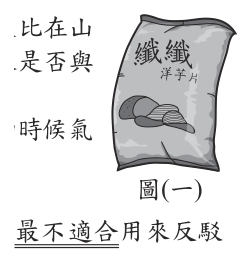
（A） 我在平地的家中開冷氣時，溫度跟山上相同，洋芋片包裝卻沒有膨脹的現象（B） 你看這瓶玻璃瓶裝可樂，同樣到氣溫較低的山上，玻璃瓶卻沒有膨脹的現象（C） 山上的便利商店內有暖氣，溫度跟山下相同，可是洋芋片包裝也有膨脹的現象（D） 開車上山的過程中，車內空調讓溫度保持不變，可是洋芋片包裝也有膨脹的現象答案：（B）
詳解與考點 正解：要反駁「洋芋片包裝因山上氣溫較低而膨脹」的說法，反例必須控制容器等其他條件，檢驗溫度與膨脹是否真有因果關係。B改用玻璃瓶裝可樂；玻璃瓶是硬容器，本來就不會像軟包裝般膨脹，無法據此反駁溫度因素，因此B最不適合。
A：平地家中開冷氣後溫度與山上相同，洋芋片包裝卻未膨脹，能指出低溫不必然造成膨脹，適合反駁。
C：便利商店有暖氣、溫度與山下相同，洋芋片包裝仍膨脹，能指出膨脹不以低溫為必要條件，適合反駁。
D：上山時車內溫度保持不變，洋芋片包裝仍膨脹，能指出氣壓改變較可能是原因，適合反駁。
本題考點：科學論證的控制變因——反駁因果主張時，應在其他條件可比下改變或固定自變因；比較軟包裝與玻璃硬容器時，容器材質已改變，不能作為檢驗溫度效果的有效反例；高山氣壓較低才是軟包裝膨脹的主要原因。
第 8 題
將月球、太陽、氫原子、口腔皮膜細胞依照體積大小，標示於圖(二)中的體積尺度示意圖。圖中越靠近數線左端的物質，體積越小；越靠近數線右端的物質，體積越大。則下列四項甲、乙、丙、丁的對應方式，何者最合理？
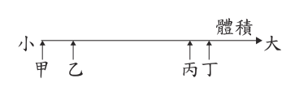
（A） 甲－氫原子，乙－口腔皮膜細胞，丙－太陽，丁－月球（B） 甲－氫原子，乙－口腔皮膜細胞，丙－月球，丁－太陽（C） 甲－口腔皮膜細胞，乙－氫原子，丙－太陽，丁－月球（D） 甲－口腔皮膜細胞，乙－氫原子，丙－月球，丁－太陽答案：（B）
詳解與考點 正解：圖(二)由左至右代表體積由小至大，應先排出四者的尺度順序。氫原子約為10⁻¹⁰m等級，最小；口腔皮膜細胞約數十µm，次之；月球半徑約1700km；太陽半徑約70萬km，約為月球的數百倍。因此甲為氫原子、乙為口腔皮膜細胞、丙為月球、丁為太陽，B為正解。
A：把太陽放在月球之前，誤判太陽小於月球，錯誤。
C：把口腔皮膜細胞排在氫原子之前，又把太陽放在月球之前，兩處尺度順序都錯誤。
D：把口腔皮膜細胞排在氫原子之前，違反原子小於細胞的尺度關係，錯誤。它看起來對，是因為月球與太陽的相對位置正確，但四個物體都必須依序對應才可選。
本題考點：尺度排序——依大小先比較量級，再比較具體數值；氫原子小於口腔皮膜細胞，小於月球，小於太陽；數線左端代表較小、右端代表較大。
第 9 題
製作蛋糕時，常會在白色的鮮奶油中加入些許色素混合，使其顏色變化增加美觀，而鮮奶油仍維持原本的性質。做好的蛋糕需妥善冷藏，以防止鮮奶油腐壞變質。關於上述鮮奶油「變色」和鮮奶油「變質」兩者的說明，下列何者最合理？
（A） 兩者都是化學變化（B） 兩者都不是化學變化（C） 只有後者是化學變化（D） 只有前者是化學變化答案：（C）
詳解與考點 正解：判斷物理或化學變化的關鍵是是否產生新物質。鮮奶油加入些許色素混合後僅改變外觀顏色，原本性質維持不變，屬物理變化；鮮奶油腐壞變質時，微生物分解有機物而形成新物質，屬化學變化。因此只有後者是化學變化，C為正解。
A：變色只是色素與鮮奶油混合，沒有形成新物質，不能說兩者都是化學變化，錯誤。
B：腐壞會產生新物質，確為化學變化，不能說兩者都不是化學變化，錯誤。
D：前者的混色屬物理變化，後者才是化學變化，選項將兩者判反，錯誤。
本題考點：物理與化學變化——僅形狀、狀態或外觀改變而未產生新物質者為物理變化；產生新物質、性質改變者為化學變化；色素混合與腐壞須分別依此判準判斷。
第 10 題
蘋果酸是蘋果等水果中含有的成分，化學式為 C4H6O5，分子中含有兩個—COOH 原子團，是蘋果的酸味來源，常作為食品添加劑。關於蘋果酸的說明，下列何者正確？
（A） 屬於有機化合物，也是電解質（B） 屬於有機化合物，也是非電解質（C） 屬於無機化合物，也是電解質（D） 屬於無機化合物，也是非電解質答案：（A）
詳解與考點 正解：題幹給蘋果酸化學式 C4H6O5，且分子含兩個 —COOH 原子團，須同時判斷有機物與電解質。蘋果酸含碳、氫等元素，屬有機化合物；—COOH 為羧基，可在水中解離釋出 H+，雖為弱酸仍能導電，屬電解質。因此 A 為正解。
B：非電解質溶於水後不會形成離子，但蘋果酸的 —COOH 可解離釋出 H+。
C、D：兩項都把蘋果酸判為無機化合物；蘋果酸含 C、H 組成的有機結構，應判為有機化合物。
本題考點：有機化合物——可由含碳、氫的化合物結構判定；電解質——酸的 —COOH 可在水中解離出 H+，弱酸雖解離較少，仍屬電解質。
第 11 題
人類的 ABO 血型是由一對遺傳因子控制，而控制此血型的遺傳因子有 I A、I B 和 i 三種型式，其中 IA 和 I B 是顯性，i 是隱性，血型和基因型的關係如表(二) 所示。表(三)為甲～丁四組父母的血型配對，在不考慮突變的情況下，則表(三) 中的何種組別不可能生下 O 型血型的子女？表(二) 表(三)
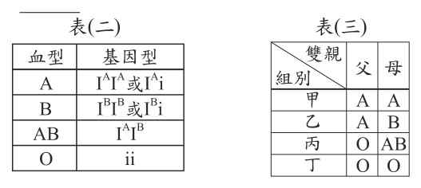
（A） 甲（B） 乙（C） 丙（D） 丁答案：（C）
詳解與考點 正解：O型血的基因型為ii，子女必須從父母雙方各得到一個i。丙為O型（ii）與AB型（IᴬIᴮ）的配對，AB型不帶i，子女一定得到Iᴬ或Iᴮ，不能形成ii，因此C不可能生下O型子女。
A：A型親本可能是Iᴬi，若兩者都帶i，仍可能生出ii。
B：A型可為Iᴬi、B型可為Iᴮi，兩者都帶i時可能生出ii。
D：O型為ii，ii×ii的子女皆為ii，必為O型。
本題考點：ABO血型遺傳——O型基因型是ii，判斷時先檢查雙親是否都能提供i；AB型判準——IᴬIᴮ不含隱性i，不能與O型親本生出ii。
第 12 題
小蘭想了解山坡地發生山崩時，不同因素對建築物破壞程度的影響，而設計以下實驗，裝置如圖(三)所示。θ為斜面與水平面間的夾角，實驗方式是讓石塊從斜面上滑落撞擊下方的模型房屋。表(四)則是小蘭 4 次實驗的一些參數。下列有關此實驗的敘述，何者正確？表(四) 圖(三)
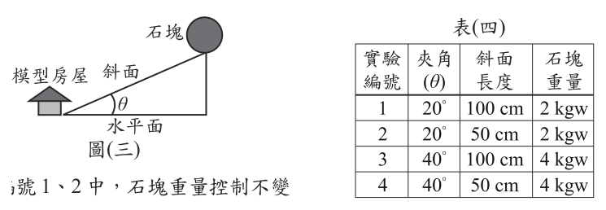
（A） 在實驗編號 1、2 中，石塊重量控制不變（B） 在實驗編號 3、4 中，斜面長度控制不變（C） 若要了解夾角θ的影響，可參考實驗編號 2、4 的結果（D） 若要了解斜面長度的影響，可參考實驗編號 1、3 的結果答案：（A）
詳解與考點 正解：題幹要判斷控制變因，須比較表中各次實驗的條件。編號1、2的石塊重量都為2 kgw，重量控制不變，A正確。
B：編號3、4的斜面長度分別為100 cm與50 cm，並未控制不變。
C：比較編號2、4時，雖然斜面長度同為50 cm，但石塊重量分別為2 kgw與4 kgw；不只改變夾角θ，不能單獨判斷夾角的影響。
D：比較編號1、3時，夾角分別為20°與40°，重量也分別為2 kgw與4 kgw；同時改變多個條件，不能歸因於斜面長度。
本題考點：控制變因——探討某一因素時，只改變該因素，其餘條件須相同；實驗表判讀——先逐欄核對重量、斜面長度與夾角，確認是否只有一個變因不同。
第 13 題
根據地震波波速變化可知，地球內部可分為地殼、地函、地核三層。上述分層與岩石圈和軟流圈厚度範圍的關係，下列何者最合理？
（A） 岩石圈的厚度範圍與地殼相等（B） 軟流圈的厚度範圍與地函相等（C） 岩石圈包括了地殼與一部分的地函（D） 軟流圈包括了地函與一部分的地殼答案：（C）
詳解與考點 正解：題幹比較的是依化學成分與地震波速劃分的地殼、地函、地核，和依物理性質劃分的岩石圈、軟流圈。岩石圈包含整個地殼及地函最上層剛硬的部分，因此 C「岩石圈包括了地殼與一部分的地函」正確。
A：岩石圈不只等於地殼，還包含最上層的地函，錯誤。
B：軟流圈只位於地函中的一部分，並不等於整個地函，錯誤。
D：軟流圈位於岩石圈下方的地函中，不包含地殼，錯誤。
本題考點：地球內部的兩種分層——地殼、地函、地核依成分與地震波速劃分；岩石圈、軟流圈依物理性質劃分；範圍判準——岩石圈含地殼與部分上部地函，軟流圈是地函的一部分。
第 14 題
下列選項中的四個活動，光線經過「」中的裝置後，哪一個不會改變光的傳播方向？
（A） 利用「針孔」成像觀察日食（B） 利用「放大鏡」觀察校園中的花朵（C） 利用「汽車後照鏡」觀察後方的車輛位置（D） 利用「三稜鏡」將陽光分散成七種不同顏色的光答案：（A）
詳解與考點 正解：針孔成像是利用光沿直線傳播，針孔只讓部分光線通過，光線穿過後不改變原本的傳播方向。A正確。
B：放大鏡是凸透鏡，光通過透鏡會折射而改變方向。
C：汽車後照鏡利用反射，反射光的方向會改變。
D：三稜鏡使光折射並色散，光的方向會改變。
本題考點：光的直線傳播——針孔成像以遮擋與直線前進形成像；光路改變判準——透鏡與三稜鏡是折射、鏡面是反射，均會改變光的傳播方向。
第 15 題
圖(四)為某一地區的地層剖面示意圖，圖中灰色部分岩層飽含地下水。關於甲、乙、丙、丁所指的各種交界面，何者為地下水面？
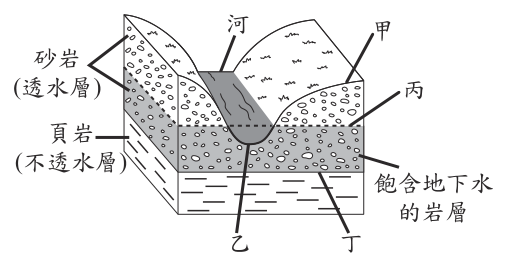
（A） 甲（B） 乙（C） 丙（D） 丁答案：（C）
詳解與考點 正解：題幹說灰色岩層飽含地下水；地下水面就是飽和含水帶與上方未飽和帶的交界，也就是地下水的上表面。圖中丙位於透水砂岩內灰色飽水區的頂端，故 C 為正解。
A：甲是地表或河谷邊界，不是飽和帶上表面，錯誤。
B：乙位於底部頁岩等不透水層與含水岩層的交界，屬阻水底面，不是地下水面，錯誤。
D：丁同樣是含水岩層下方與不透水層的交界，不是地下水面，錯誤。
本題考點：地下水面定義——飽和含水帶最上方與未飽和帶的交界即為地下水面；圖像判讀——先找灰色飽水區，再找它的上緣，不可誤選地表或不透水層交界。
第 16 題
水平桌面上畫有由大小相等正方形組成的方格，一條導線沿著桌面上的直線水平放置，將導線通入穩定電流，如圖(五)所示。關於載流導線在桌面上 P、Q 兩點所產生的磁場強度及方向，下列何者正確？
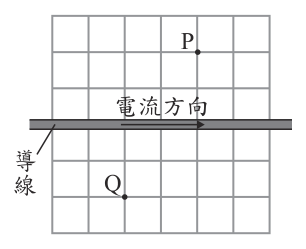
（A） 強度相同，方向相同（B） 強度相同，方向不同（C） 強度不同，方向相同（D） 強度不同，方向不同答案：（B）
詳解與考點 正解：題幹要同時判斷直導線磁場的強度與方向；P、Q到導線的垂直距離各約一格，距離相等所以磁場強度相同；但兩點位於導線兩側，依安培右手定則磁場方向相反，故 B 為正解。
A：雖然強度相同，但導線兩側的磁場繞向相反，不能判為方向相同。
C：P、Q到導線的垂直距離相等，不能判為強度不同。
D：同時誤判強度與方向；它看起來對，是因為兩點位置不同，但磁場強度取決於到導線的垂直距離。
本題考點：直導線磁場——磁場強度與到導線的垂直距離成反比；以右手拇指指向電流方向，四指彎曲方向即為磁場方向；導線兩側的方向相反。
第 17 題
圖(六)為實驗課的二臺顯微鏡，阿彥和阿秀想利用顯微鏡觀察一朵小花，若阿彥要觀察萼片細胞的葉綠體大小，而阿秀要觀察雄蕊的數目，則最適合他們使用的顯微鏡分別為何？
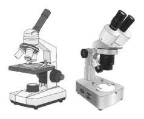
（A） 兩人皆為複式顯微鏡（B） 兩人皆為解剖顯微鏡（C） 阿彥為複式顯微鏡，阿秀為解剖顯微鏡（D） 阿彥為解剖顯微鏡，阿秀為複式顯微鏡答案：（C）
詳解與考點 正解：題幹分別要求觀察細胞內葉綠體大小與整朵花的雄蕊數目，前者需要高倍率，後者需要較大視野觀察立體實物。阿彥應用複式顯微鏡，阿秀應用解剖顯微鏡，C正確。
A：阿秀只需數雄蕊，複式顯微鏡視野小且不適合觀察整朵花。
B：阿彥要看細胞內的葉綠體大小，解剖顯微鏡倍率不足。
D：兩種顯微鏡的用途對調；它看起來對，是因為兩者都能放大物體，但細胞內微小構造須用複式顯微鏡。
本題考點：複式顯微鏡——高倍率，適合觀察細胞與細胞內微小構造；解剖顯微鏡——倍率較低、視野較大，適合觀察立體實物的外部構造與數目。
第 18 題
一株植物含有不同類型的細胞，以榕樹為例，關於其可行光合作用的細胞數目與可行呼吸作用的細胞數目之比較及其原因，下列何者最合理？甲圖(六) 乙
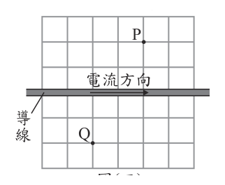
（A） 甲大於乙，因植物的部分細胞不具有粒線體（B） 甲小於乙，因植物的部分細胞不具有粒線體（C） 甲小於乙，因植物的部分細胞不具有葉綠體（D） 甲等於乙，因植物細胞皆具有葉綠體與粒線體答案：（C）
詳解與考點 正解：題幹比較可行光合作用與可行呼吸作用的細胞數。活細胞普遍具有粒線體，因此都能行呼吸作用；只有含葉綠體的細胞，如葉肉細胞，才能行光合作用。根、莖內部等許多細胞不含葉綠體，所以甲小於乙，原因是部分細胞不具有葉綠體，故 C 為正解。
A：甲大於乙不合胞器分布，且把部分細胞不能呼吸歸因於缺粒線體，錯誤。
B：雖判斷甲小於乙，卻誤稱部分細胞不具有粒線體；活細胞能呼吸正因具有粒線體。
D：不是所有植物細胞都具有葉綠體，例如根部許多細胞不具葉綠體，故兩者數目不會相等。
本題考點：胞器功能——粒線體與呼吸作用、葉綠體與光合作用相關；細胞分化——植物不同部位的細胞胞器不盡相同，須依是否具有葉綠體判斷能否光合作用。
第 19 題
「一氧化二氮無色、無味，在常溫常壓下為氣態。它會吸收地表輻射，也對人體的中樞神經有作用，常在醫療上作為麻醉使用。」根據上述介紹，可知一氧化二氮會造成溫室效應，其原因最可能是上述提到的何種特性？
（A） 無色、無味（B） 會吸收地表輻射（C） 常溫常壓下為氣態（D） 對人體的中樞神經有作用答案：（B）
詳解與考點 正解：題幹問一氧化二氮造成溫室效應的原因，關鍵是溫室氣體能吸收地表放出的長波輻射，使熱量較不易散失。一氧化二氮「會吸收地表輻射」正是這項機制，B 為正解。
A：無色、無味只是外觀性質，不能說明是否會吸收地表輻射。
C：常溫常壓下為氣態只說明物理狀態；氣體是否造成溫室效應仍要看能否吸收地表輻射。
D：對中樞神經有作用是生理效應，與大氣中熱量吸收、滯留的機制無關。
本題考點：溫室效應——大氣氣體吸收地表長波輻射，使熱量滯留並增溫；性質與機制配對——從多項性質中選出直接造成現象的物理機制，不以顏色、狀態或生理作用代替。
第 20 題
圖(七)是近 30 年臺北和恆春不同月的平均氣溫( 折線圖) 與平均降雨量 (柱狀圖)情形。根據圖中數據所做的推論，下列何者最不合理？
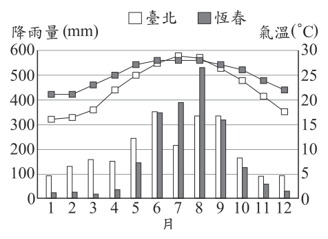
（A） 恆春的晝夜溫差較臺北小，約為 7℃（B） 臺北的每月平均降雨量都超過 50 mm（C） 相較於臺北，恆春大部分的降雨集中在 5～10 月（D） 臺北不同月的平均氣溫變化較恆春大，約為 13℃答案：（A）
詳解與考點 正解：題目問最不合理，圖中提供的是各月平均氣溫與平均降雨量，不能據此得知一天內最高、最低溫的差。A所稱恆春晝夜溫差約為7℃沒有圖表依據，故為正解。
B：臺北各月的降雨量柱狀圖都高於50 mm，可由圖讀出。
C：恆春大部分降雨量集中在5至10月，符合柱狀圖。
D：臺北最高與最低月平均氣溫相差約13℃，且折線變化比恆春大，符合圖中資料。
本題考點：氣候圖判讀——月平均氣溫可比較不同月份的溫度變化，月降雨量可比較降雨分布；資料範圍判準——圖表未提供晝夜最高、最低溫時，不能推論晝夜溫差。
第 21 題
圖(八)～圖(十)為一則新聞報導，有一種「自熱罐」飲料，罐身下方隔層有 CaO 和水，兩者混合後會放出熱量，可使飲料溫度上升至 60℃ 左右，且續熱半小時以上，在寒冷的冬天相當方便。圖(八) 圖(九) 圖(十) 小禾認為圖(十)中說明產生的物質有誤，應更正為何種物質？
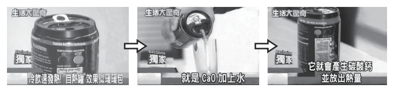
（A） 碳酸鈉（B） 硫酸鈣（C） 氫氧化鈉（D） 氫氧化鈣答案：（D）
詳解與考點 正解：題幹指出自熱罐中的 CaO 與水混合後放熱，須依反應物元素組成判定產物。反應式為 CaO＋H2O→Ca(OH)2，氧化鈣與水生成氫氧化鈣並放出熱量，所以圖中應更正為氫氧化鈣，D 為正解。
A：碳酸鈉含鈉、碳兩種元素，但反應物 CaO 和 H2O 中沒有鈉或碳的來源。
B：硫酸鈣含硫元素，但反應物中沒有硫的來源。
C：氫氧化鈉含鈉元素，但反應物中沒有鈉的來源。
本題考點：化學反應產物——先寫出反應式 CaO＋H2O→Ca(OH)2，再依生成物名稱判斷；元素守恆——產物的元素必須來自反應物，沒有鈉、硫或碳的來源就不會生成含這些元素的物質。
第 22 題
為避免攝取過量咖啡因，可先降低咖啡豆中的咖啡因含量。將咖啡豆浸泡在有機溶劑中，咖啡因會溶於溶劑中，之後取出咖啡豆加熱，使溶劑揮發掉。二氯甲烷是過往常用的有機溶劑，去除咖啡因效果好又易揮發，但後來因安全疑慮而棄用，並改用乙酸乙酯。因為酯類_______，所以較無安全性疑慮，美國食品藥物管理局許可使用乙酸乙酯來去除咖啡因，且無明定殘留許可標準。依據上述資訊，畫線處最適合填入下列何者？
（A） 只由碳和氫兩種原子所組成（B） 是香蕉、柳丁等水果就含有的物質（C） 沸點比二氯甲烷高，而不易揮發去除（D） 是油脂與鹼性物質進行皂化反應後的產物答案：（B）
詳解與考點 正解：畫線處要補的是酯類較無安全性疑慮的理由。乙酸乙酯等酯類天然存在於香蕉、柳丁等水果中，人體對其代謝耐受性較高，故選B「是香蕉、柳丁等水果就含有的物質」。
A：酯類含有氧原子，具有－COO－結構，並非只由碳和氫兩種原子組成，錯誤。
C：沸點較高而不易揮發，表示溶劑較不易被加熱去除，反而不是安全性較佳的理由，錯誤。
D：油脂與鹼性物質皂化後的產物是脂肪酸鹽（肥皂）與甘油，不是本題所述的酯類來源，錯誤。
本題考點：酯類——酯類含有－COO－，可見於部分水果的香味成分；皂化反應——油脂加鹼生成甘油與脂肪酸鹽，不能誤認為生成酯類。
第 23 題
圖(十一)為某地的一條食物鏈，圖(十二)則為依據此食物鏈各層級生物體總能量所繪製成的能量塔示意圖(面積不代表實際能量大小)，若其中蛇類族群的總能量約為 10,000 能量單位，則乙階層所含的總能量最接近下列何者？圖(十一) 圖(十二)
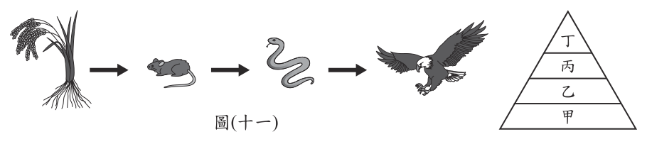
（A） 100 能量單位（B） 1,000 能量單位（C） 10,000 能量單位（D） 100,000 能量單位答案：（D）
詳解與考點 正解：食物鏈為稻→鼠→蛇→鷹，能量塔由下而上為甲稻、乙鼠、丙蛇、丁鷹。蛇在丙階層有10,000能量單位，往下一營養階層能量約為10倍，所以乙=10,000×10=100,000能量單位，D正確。
A：100能量單位比蛇的能量少100倍，方向相反。
B：1,000能量單位比蛇少10倍，誤把能量往上遞減的方向套在鼠身上。
C：10,000能量單位與蛇相同，漏算鼠位於蛇下一層的10倍關係。
本題考點：能量塔——能量沿食物鏈向上傳遞時約每層剩1／10；計算判準——已知某層能量，往下一層乘10，往上一層除10。
第 24 題
圖(十三)為臺灣附近的地面天氣簡圖，圖中黑色曲線為等壓線。此時全臺各地皆受天氣系統甲的影響，目前的地面風向大致以東北風為主。同時在呂宋島東方海面的天氣系統乙則有機會發展為輕度颱風。根據上述資訊，下列推論何者最合理？
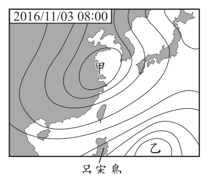
（A） 由天氣系統甲的位置判斷，其氣團性質與太平洋暖氣團相同（B） 由天氣簡圖判斷，當天呂宋島北部的地面風向大致為北風或東北風（C） 受天氣系統甲的影響，臺灣南部及東南部的雨勢比北部及東北部強（D） 未來若天氣系統乙移至呂宋島上方，會使呂宋島產生晴朗炎熱的天氣型態答案：（B）
詳解與考點 正解：題幹指出全臺以東北風為主，表示天氣系統甲為帶來東北季風的大陸冷高壓。高壓周圍氣流順時針向外輻散；位於甲西南側的呂宋島北部，地面風大致為北風或東北風，故 B 為正解。
A：大陸冷高壓的氣團乾冷，與暖濕的太平洋暖氣團性質不同，錯誤。
C：東北季風下，北部與東北部為迎風面，雨勢通常較強；此項把強降雨區域顛倒。
D：天氣系統乙若移至呂宋島上方，會帶來較不穩定的天氣與降雨，不會形成晴朗炎熱的天氣型態。
本題考點：地面天氣圖判讀——由風向與等壓線判斷高、低壓系統；東北季風——大陸冷高壓帶來偏北、東北風，北部與東北部較易受地形抬升降雨。
第 25 題
在筆直的道路上有甲、乙、丙、丁四輛車，圖(十四)為四車的速度 (v) 與時間 (t)關係圖。若 t＝0 s 時，四車位於同一位置，則有關 t＞0 s 車輛間距離的敘述，下列何者正確？
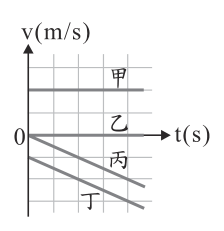
（A） 甲、乙兩車的距離保持不變（B） 丙、丁兩車的距離保持不變（C） 甲、丙兩車的距離愈來愈近（D） 乙、丁兩車的距離愈來愈遠答案：（D）
詳解與考點 正解：t=0 s時四車同位置，兩車距離等於各自在v–t圖線下面積所代表位移的差。乙的速度為0，始終停在原位；丁的速度為負且愈來愈小，持續往後移動，所以乙、丁的距離愈來愈遠，D正確。
A：甲維持正速度前進，乙靜止，兩車距離會愈來愈大。
B：丙、丁的圖線雖平行，表示加速度相同，但兩者速度始終相差定值，丁恆比丙快地後退，距離會持續拉大。
C：甲往前、丙往後，方向相反，兩車距離愈來愈遠。
本題考點：v–t圖——圖線下面積代表位移；距離變化判準——同起點後，先比較速度方向與位移差，乙靜止而丁持續後退時，兩者間距必增加。
第 26 題
表(五)為某人體心臟內甲、乙兩個心室的血液中 O2 含量，根據此表，推測此兩心室所連接的血管，下列敘述何者最合理？
表(六) 心室代號 O2含量(mL/100 mL) 甲 19.8 乙 15.2
（A） 甲與大靜脈連接（B） 甲與肺靜脈連接（C） 乙與主動脈連接（D） 乙與肺動脈連接 )答案：（D）
詳解與考點 正解：表中甲的O2含量為19.8 mL／100 mL，屬充氧血，應為左心室；乙為15.2 mL／100 mL，屬缺氧血，應為右心室。右心室將缺氧血送往肺臟，連接肺動脈，因此D正確。
A：大靜脈把缺氧血送回右心房，不與甲這個充氧血心室連接。
B：肺靜脈把充氧血送回左心房，不與甲的左心室直接連接。
C：主動脈由左心室送出充氧血；乙為缺氧血的右心室，不會連接主動脈。
本題考點：心臟血流——左心室含氧量高並連接主動脈，右心室含氧量低並連接肺動脈；表格判讀——先以O2含量判別充氧或缺氧血，再對應心室與血管。
第 27 題
圖(十五)為甲和乙兩國在 2015 年，以及 2030 年時預計達成的發電方式比例圖：圖(十五) 參考表(六)資料，假設沿用同樣的發電機組，僅考慮發電方式的比例改變，不考慮其他因素，則與 2015 年相比，預測兩國在 2030 年平均每度電的碳排放量會如何變化？
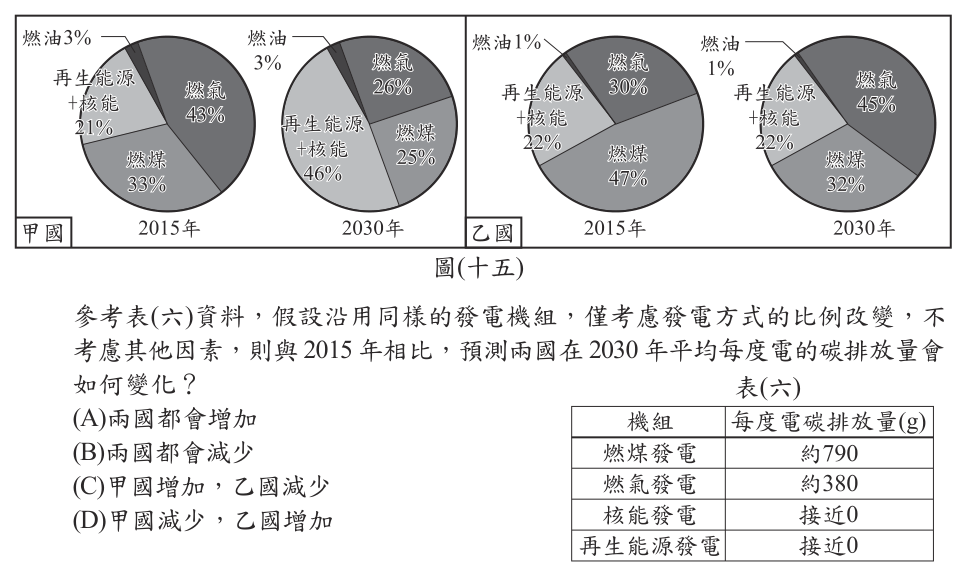
（A） 兩國都會增加（B） 兩國都會減少（C） 甲國增加，乙國減少（D） 甲國減少，乙國增加答案：（B）
詳解與考點 正解：題幹比較2030年平均每度電碳排放，應以各發電方式的碳排放量與比例加權判斷。燃煤約790 g、燃氣約380 g，核能與再生能源接近0；甲國燃煤由33%降至25%，再生能源加核能由21%升至46%，平均碳排放下降。乙國燃煤由47%降至32%，高碳燃煤比例下降，平均碳排放也下降，故B為正解。
A：兩國都減少高碳的燃煤比例，不能判為都增加，錯誤。
C：甲國提高接近零碳的再生能源與核能比例，平均碳排放不會增加，錯誤。
D：乙國燃煤比例由47%降至32%，平均碳排放不會增加，錯誤。
本題考點：發電結構與碳排放——比較平均每度電碳排放時，要以各發電方式的碳排放量乘其占比後加權；能源轉型判讀——高碳燃煤占比下降、近零碳能源占比上升，平均碳排放下降。
第 28 題
小禮將一杯 20℃ 的純水分為甲、乙兩杯，甲、乙兩杯純水的質量分別為 M甲、 M乙，他將兩杯水分別以相同的熱源加熱，並記錄其加熱時間與上升溫度。已知 M甲：M乙＝3：2，若熱源發出的熱量完全被水吸收，且水的蒸發忽略不計，則水的上升溫度與加熱時間之關係圖最接近下列何者？
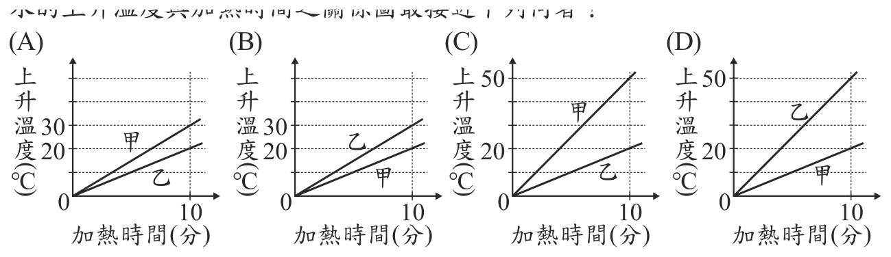
本題選項為上圖中的 A／B／C／D，請對照圖片作答。
答案：（B）
詳解與考點 正解：兩杯水以相同熱源加熱，熱源每單位時間提供的熱量相同。由Q=mcΔT，可得ΔT=Q／mc；水的比熱c相同，因此質量越小，升溫越快。M甲：M乙=3：2，乙較輕，所以同一時間內乙的上升溫度較甲大；兩線都由原點出發且為直線，乙線在上、甲線在下，B正確。
A：圖中的甲、乙升溫快慢關係不符乙質量較小、升溫較快的條件。
C：圖中的兩線高低關係與乙升溫較快不符。
D：圖中的甲、乙升溫斜率關係與質量比3：2不符。
本題考點：熱量公式——Q=mcΔT，固定熱量與比熱時，ΔT和質量成反比；關係圖判讀——相同熱源下溫度上升量與加熱時間成正比，質量較小者斜率較大。
第 29 題
「新聞報導某處養殖池的白蝦大量暴斃，調查後初步推測是高溫與暴雨，使養殖池的溶氧量和 pH 值劇烈變化，導致水質改變所造成的。專家建議為避免白蝦大量死亡，應注意水溫變化，可先用水車調整水中的溶氧量，並監控水中的 pH 值，投放熟石灰(氫氧化鈣)調整至合適的 pH 值。」關於上述專家建議的方法，下列說明何者最合理？
（A） 使水中的溶氧量增加，pH 值增加（B） 使水中的溶氧量增加，pH 值減少（C） 使水中的溶氧量減少，pH 值增加（D） 使水中的溶氧量減少，pH 值減少 ※ 溶氧量：溶解於水中的氧氣量答案：（A）
詳解與考點 正解：水車攪動水面會增加水與空氣的接觸，使氧氣溶入水中，溶氧量增加；熟石灰Ca(OH)2為鹼性物質，溶於水後釋出OH⁻，使pH值上升。因此A正確。
B：pH值要減少須加入酸性物質，熟石灰不符合。
C：水車的作用是增氧，不會使溶氧量減少。
D：水車與熟石灰的兩項效果都被判反。
本題考點：水車增氧——攪動水面可增加氧氣溶入水中的機會；酸鹼判準——熟石灰Ca(OH)2為鹼性，加入水中使pH值增加。
第 30 題
圖(十六)分別為在鑰匙上鍍銅和鋅銅電池的裝置示意圖。已知圖中的和，其中一個代表電子流動方向，另一個代表電流流動方向。依據圖中資訊判斷，鋅銅電池中乙電極進行的反應，應為下列何者？
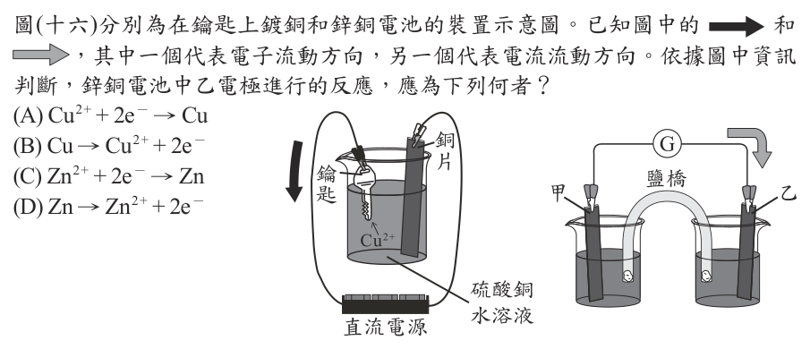
（A） Cu2+ + 2e－ → Cu（B） Cu → Cu2+ + 2e－（C） Zn2+ + 2e－ → Zn（D） Zn → Zn2+ + 2e－答案：（A）
詳解與考點 正解：鋅銅電池放電時，鋅較活潑，在負極發生氧化：Zn→Zn²⁺+2e⁻；銅電極為正極，發生還原。由圖示的電流與電子流動方向判讀，乙為銅正極，所以反應為Cu²⁺+2e⁻→Cu，A正確。
B：Cu→Cu²⁺+2e⁻是銅的氧化反應，不是乙銅正極的還原反應。
C：Zn²⁺+2e⁻→Zn是鋅離子的還原反應，不會在銅電極進行。
D：Zn→Zn²⁺+2e⁻是鋅負極的氧化反應，不是乙電極反應。
本題考點：鋅銅電池——鋅負極氧化、銅正極還原；電極反應判準——氧化反應放出電子，還原反應得到電子，外電路電子由負極流向正極。
第 31 題
有一個帶電的離子含有 X、Y、Z 三種粒子(質子、電子、中子，未依照順序排列)，且 X、Y、Z 的粒子數目依序為 NX、NY、NZ 。已知 X 粒子的質量最小，關於此離子的說明，下列何者最合理？
（A） 若為陽離子，且 NY＞NX＝NZ，則 Z 為質子（B） 若為陽離子，且 NY＞NX＝NZ，則 Z 為電子（C） 若為陰離子，且 NX＝NY＞NZ，則 Z 為質子（D） 若為陰離子，且 NX＞NY＝NZ，則 Z 為電子答案：（C）
詳解與考點 正解：題幹先說 X 的質量最小，故 X 必為電子；陰離子則必須電子數大於質子數。C 中 NX=NY＞NZ。令 X 為電子，若 Y 為質子、Z 為中子，電子數與質子數相等，不能形成陰離子；所以 Y 應為中子、Z 為質子。此時電子數 NX＞質子數 NZ，符合陰離子，故 Z 為質子，C 為正解。
A：X 為電子，陽離子須質子數大於電子數；但 NY＞NX=NZ 時，無論如何安排 Y、Z，都不能使題述「Z 為質子」與粒子數關係成立，錯誤。
B：同樣在陽離子條件下，NY＞NX=NZ；若 Z 為電子，電子數 NZ 與 X 的電子身分衝突，且無法由題設得到陽離子所需的質子數大於電子數，錯誤。
D：X 為電子，若 Z 為電子，會有兩種粒子都被判為電子；並且 NY=NZ 使質子數與電子數無法符合陰離子電子數較多的條件，錯誤。
本題考點：原子粒子辨識——電子質量最小，質子與中子質量約相近；離子電性判準——電子數大於質子數為陰離子，質子數大於電子數為陽離子；代入粒子數關係時，三種粒子的身分須各不相同。
第 32 題
已知蜂蜜中含有分解澱粉的酵素。現有甲、乙兩試管皆裝有等量且濃度相同的澱粉液，隨機在其中一支加入蜂蜜，另一支加入等量的水。將兩支試管充分搖勻，靜置於適宜的溫度，待足夠的反應時間後，以碘液檢測。結果顯示甲呈現藍黑色，乙呈現黃褐色。根據此結果，推測哪一支試管加入了蜂蜜及其理由，下列何者最合理？
（A） 甲，因未檢測出澱粉（B） 甲，因有檢測出澱粉（C） 乙，因未檢測出澱粉（D） 乙，因有檢測出澱粉答案：（C）
詳解與考點 正解：碘液遇澱粉呈藍黑色，未檢測出澱粉時呈黃褐色。甲呈藍黑色，表示仍有澱粉；乙呈黃褐色，表示澱粉已被分解。蜂蜜含分解澱粉的酵素，所以乙加入蜂蜜，且未檢測出澱粉，C正確。
A：甲呈藍黑色，代表檢測得到澱粉，不能說未檢測出澱粉。
B：甲雖檢測得到澱粉，但這表示澱粉未被蜂蜜中的酵素分解，甲應是加水的試管。
D：乙呈黃褐色，理由卻說有澱粉，與碘液檢測結果矛盾。
本題考點：碘液檢測——有澱粉呈藍黑色，無澱粉呈黃褐色；酵素作用判準——含分解澱粉酵素的蜂蜜會使澱粉減少，依反應後顏色判斷加入蜂蜜的試管。
第 33 題
有一槓桿其轉軸 O1 點在槓桿中央，同時在距 O1 點兩側 20 cm 處，垂直槓桿施予大小為 F 的力，如圖(十七)所示，兩力對此槓桿產生的合力矩大小為 L 1。另有一槓桿其轉軸 O 2 點在槓桿的一端，在距 O 2 點 40 cm 處，垂直槓桿施予大小為 F 的力，如圖(十八)所示，此力對此槓桿產生的力矩大小為 L 2。關於 L 1 及 L 2 兩者的關係，下列何者正確？
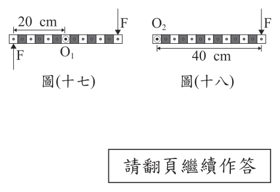
（A） L1＝L2（B） L1＝2L2（C） 2L1＝L2（D） L1＝0，且 L1＜L2答案：（A）
詳解與考點 正解：題眼是兩側的力都垂直槓桿，且在 O1 兩側各距 20 cm；兩力方向相反但造成的轉動方向相同，形成力偶，所以要把力矩相加。L1＝F×20 cm＋F×20 cm＝40F cm；另一槓桿的 L2＝F×40 cm＝40F cm。因此 L1＝L2，A 正確。
B：由 L1＝40F cm、L2＝40F cm 可知兩者相等，並非 L1＝2L2。
C：同樣由 L1＝L2 可知，不會有 2L1＝L2。
D：兩側反向施力不是互相抵消；相對轉軸的轉動效應同向，故 L1 不為 0。它看起來對，是因為只看力的方向相反而忽略兩力分居轉軸兩側。
本題考點：力矩——力矩大小＝力×力臂，垂直施力時力臂為轉軸到作用線的距離；力偶——兩個大小相等、方向相反且不共線的力，對轉軸的力矩同向相加。
第 34 題
一條輕繩的一端固定於水平桌面的桌緣上，拉直此繩使其呈水平後，再以固定頻率鉛直上下振動，產生相同頻率的繩波，其示意圖如圖(十九)所示。繩波上一點 P 與桌面水平線的鉛直高度與時間的關係如表(七)所示，依據此表推論下列何者最可能是此繩波的週期？表(七) 圖(十九)
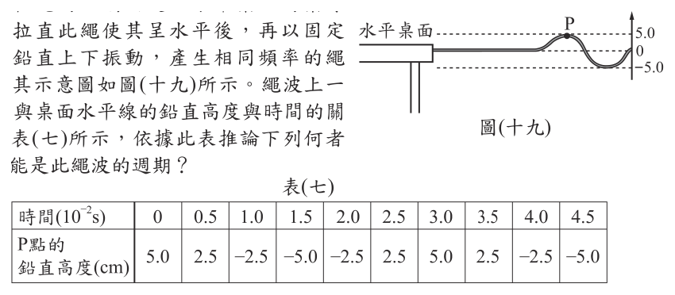
（A） 1.0 × 10-2 s（B） 1.5 × 10-2 s（C） 2.0 × 10-2 s（D） 3.0 × 10-2 s答案：（D）
詳解與考點 正解：週期是同一點回到相同位置且運動方向也相同所需的時間。表中P點在t=0時高度為5.0 cm的最高點，至t=3.0×10⁻² s再次回到5.0 cm，期間完成一次完整振動，因此週期T=3.0×10⁻² s，D正確。
A：1.0×10⁻² s時尚未回到起始的最高點，不是一個週期。
B：1.5×10⁻² s時高度為−5.0 cm，是最低點，只完成半個週期。
C：2.0×10⁻² s時尚未完成一次完整上下振動。
本題考點：繩波週期——週期為質點完成一次完整振動、回到相同位置且方向相同的時間；表格判讀——從最高點到最低點是半週期，最高點再次出現才是一個週期。
第 35 題
小萍比較人體血液中的尿素與氧氣在「流出甲器官後」的濃度變化，結果如表(八)所示。根據上述，推測甲器官最可能是下列何者？
（A） 膀胱（B） 肝臟（C） 肺臟（D） 腎臟答案：（B）
詳解與考點 正解：題幹表(八)顯示血液流出甲器官後，尿素濃度上升而氧氣濃度下降；能產生尿素且進行代謝耗氧的器官是肝臟。肝臟會將胺基酸代謝產生的氨轉變為尿素並釋入血液，所以尿素上升；同時肝臟細胞進行旺盛代謝而消耗氧氣，所以氧氣下降，故B為正解。
A：膀胱的功能是儲存尿液，不會直接使血液中的尿素增加、氧氣下降，錯誤。
C：血液流經肺臟會進行氣體交換並獲得氧氣，流出後氧氣應上升，與表(八)不符，錯誤。
D：腎臟會過濾血液並排除尿素，血液流出後尿素應下降，與表(八)不符。它看起來對，是因為腎臟確實與尿液有關，但判斷時要看血液中尿素的變化方向，錯誤。
本題考點：器官功能與血液成分變化——肝臟可將氨轉成尿素，使流出血液的尿素增加；器官細胞代謝會消耗氧氣，使流出血液的氧氣減少；腎臟排除尿素、肺臟補充氧氣，須以變化方向判讀。
第 36 題
阿忠與小志想要移動地上的書櫃，發現書櫃裝滿書時，他們無法推動書櫃，因此將裡面的書先拿下，之後就可以輕鬆推動書櫃。兩人對此現象的解釋如下：阿忠：由牛頓第二運動定律 F＝ma 可知，書櫃裝滿書時，質量 m 較大，因此推動書櫃所需的力 F 也較大，而造成我們推不動書櫃。小志：書櫃裝滿書時，書櫃垂直作用於地面的力較大，因此書櫃與地面間的最大靜摩擦力較大，而造成我們推不動書櫃。關於兩人的解釋是否合理？
（A） 兩人均合理（B） 兩人均不合理（C） 只有阿忠合理（D） 只有小志合理答案：（D）
詳解與考點 正解：題幹問的是書櫃在靜止時為何難以開始移動，應用最大靜摩擦力隨正向力增加的關係，而不是牛頓第二運動定律。書櫃裝滿書後，對地面的垂直作用力較大，地面對書櫃的正向力也較大，最大靜摩擦力隨之增大；推力未超過最大靜摩擦力時，書櫃便無法移動。因此只有小志的解釋合理，D為正解。
A：阿忠把F＝ma用來說明靜止物體難以推動，混淆了合力、質量與加速度的關係；靜止時加速度為0，不能據此當作推不動的原因，錯誤。
B：小志已正確指出書櫃較重會使最大靜摩擦力增加，不能說兩人均不合理，錯誤。
C：阿忠的解釋不適用於本題的「尚未開始移動」情況，故不能只有阿忠合理，錯誤。它看起來對，是因為同樣施力下質量較大物體加速度較小，但本題關鍵是先克服靜摩擦力。
本題考點：最大靜摩擦力——物體未滑動時，推力須超過最大靜摩擦力才會開始移動；正向力變大時最大靜摩擦力通常變大；牛頓第二運動定律F＝ma用於合力與加速度的關係，不能取代靜摩擦力的判斷。
第 37 題
小淳和朋友到新竹的新月沙灣玩水，他們在早上 8 點到達。他觀察當地的海浪變化，發現下列現象： ①早上 10 點時，海浪打到沙灘上的位置，比他們 8 點剛到的時候低。 ②中午 12 點用餐時，海浪打到沙灘上的位置比早上 10 點時更低了。 ③下午 2 點，準備要離開時，海浪打到沙灘上的位置比中午 12 點時更高。已知海浪打到沙灘上的位置變化是受到潮汐的影響，根據小淳的發現，推算當地的滿潮或乾潮時間應在下列哪個時間範圍內？
（A） 乾潮時間可能在早上 8 點～早上 10 點間（B） 乾潮時間可能在中午 12 點～下午 2 點間（C） 滿潮時間可能在早上 8 點～中午 12 點間（D） 滿潮時間可能在中午 12 點～下午 2 點間答案：（B）
詳解與考點 正解：海浪打到沙灘的位置先降低、後升高，表示潮位先退潮再漲潮；由降轉升之間即可能出現最低潮位，也就是乾潮。8點至10點位置降低，10點至12點又更低，12點至14點則升高，因此乾潮時間可能在中午12點至下午2點間，B為正解。
A：8點至10點間潮位仍在下降，尚未呈現由退潮轉為漲潮的最低點，錯誤。
C：8點至中午12點潮位持續下降，這段趨勢不支持滿潮，錯誤。
D：中午12點至下午2點潮位由低轉高，對應乾潮後的漲潮，不是滿潮。它看起來對，是因為此時潮位正在變高，但滿潮須是潮位由升轉降的最高點，錯誤。
本題考點：潮汐判讀——海浪到岸位置較低表示潮位較低，較高表示潮位較高；潮位由下降轉為上升時，轉折附近為乾潮；潮位由上升轉為下降時，轉折附近才是滿潮。
第 38 題
圖(二十)為一個內部為真空的密閉空心金屬球，其金屬成分為純銅。小詩將此金屬球放入水裡，球會完全沒入水中，測得排開水的體積為 V，再用天平量測其質量為 M，她發現利用密度 D＝M / V 計算出的 D 值與課本上記載的純銅密度 8.96 g/cm3 明顯不同。若小詩的測量與計算過程皆無錯誤，則下列何者最合理？
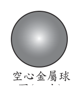
（A） D＜8.96 g/cm3，因為 M 為金屬成分的質量，但 V 大於金屬成分的體積（B） D＜8.96 g/cm3，因為 V 為金屬成分的體積，但 M 小於金屬成分的質量（C） D＞8.96 g/cm3，因為 M 為金屬成分的質量，但 V 小於金屬成分的體積（D） D＞8.96 g/cm3，因為 V 為金屬成分的體積，但 M 大於金屬成分的質量答案：（A）
詳解與考點 正解：題幹指出金屬球內部為真空，且球完全沒入水中；排開水的體積 V 因而是整顆球含空腔的外體積，不是純銅的體積。天平量得 M 為金屬成分的質量，而 V 大於金屬成分體積，代入 D＝M／V 時分母偏大，所以 D＜8.96 g/cm3，A 正確。
B：V 不是金屬成分的體積，而是含空腔的球外體積，原因錯誤。
C：M 雖是金屬成分的質量，但 V 並非小於金屬成分體積，故不會算出較大的密度。
D：V 不是金屬成分體積，M 也沒有大於金屬成分質量，兩項敘述皆錯。
本題考點：密度計算——D＝M／V，分子為物體質量、分母須配對同一物體所占體積；空心物體——以外體積除金屬質量時，空腔使分母變大，計算密度會低於材料真實密度。
第 39 題
細胞內的染色體組成會因為細胞種類的不同而有差異，編號甲、乙、丙和丁分別代表人體中不同的細胞，如表(九) 所示，下列何者不具有成對的性染色體？
表(九) 編號 細胞種類 甲 卵細胞 乙 受精卵 丙 口腔皮膜細胞 丁 成熟的紅血球
（A） 只有甲（B） 甲和丁（C） 丙和丁（D） 乙、丙和丁答案：（B）
詳解與考點 正解：題幹問「不具有成對的性染色體」，須分辨生殖細胞、體細胞與無核細胞；甲為卵細胞，染色體為單套，只含一條 X 性染色體，丁為成熟紅血球，已無細胞核而不含染色體，故甲和丁皆不具有成對的性染色體，選 B。
A：只列甲，漏掉無核的丁，錯誤。
C：列丙和丁，但丙為口腔皮膜細胞，屬體細胞，具有成對的性染色體，錯誤。
D：列乙、丙和丁，但乙為受精卵、丙為口腔皮膜細胞，皆有成對的性染色體，錯誤。
本題考點：人體細胞染色體——體細胞通常有成對染色體與成對性染色體，生殖細胞為單套；成熟紅血球無細胞核，因此不含染色體。
第 40 題
圖(二十一)為某地的地質剖面圖，已知此地地層未倒轉，且乙岩層的沉積年代為距今 15,000 年～10,000 年前之間，下列有關其他各岩層的沉積年代或形成年代，何者最合理？
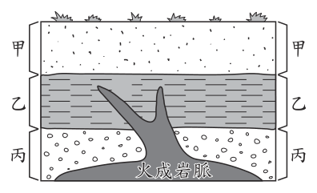
（A） 甲岩層的沉積年代距今至少（B） 丙岩層的沉積年代距今不到（C） 火成岩脈的形成時間距今至少（D） 火成岩脈的形成時間距今不到答案：（D）
詳解與考點 正解：題幹已知地層未倒轉、乙沉積於距今 15,000～10,000 年前；圖中火成岩脈由下方截切丙層並向上貫穿整層乙，頂端到達乙與甲的交界。依截切律，岩脈晚於被它完整切過的乙層；乙層最上部（最年輕處）沉積於距今 10,000 年前，岩脈既切穿至此，形成時間必晚於距今 10,000 年，故 D「距今不到 10,000 年」為正解。
A：甲在乙上方且未被岩脈截切，依疊置律較乙年輕，沉積年代不會比乙更久遠，錯誤。
B：丙在乙下方，依疊置律沉積年代較乙久遠，應早於乙的年代區間，不會距今不到 10,000 年，錯誤。
C：岩脈截切整層乙，代表它晚於乙、比乙年輕，不可能是更久遠（距今至少若干年）的敘述，錯誤。
本題考點：地層疊置律——未倒轉地層下老上新；截切律——切穿其他岩層的岩脈晚於被切岩層；當岩脈完整貫穿乙層，形成時間須晚於乙層最上部沉積完成（距今 10,000 年）。
第 41 題
圖(二十二)為老師進行實驗的步驟示意圖，在步驟四乙瓶溶液倒入前，若要預測甲瓶溶液顏色變化的可能情形，則下列的預測何者最合理？圖(二十二)
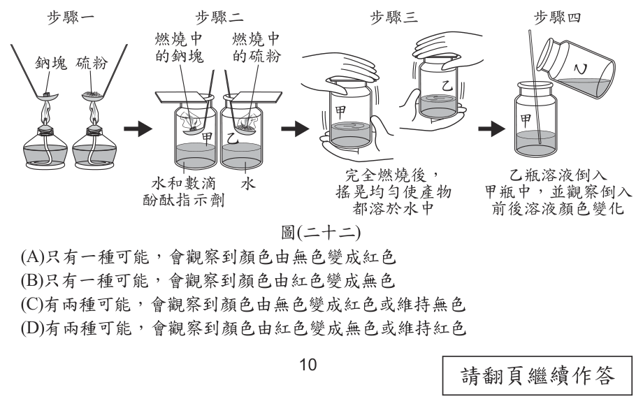
（A） 只有一種可能，會觀察到顏色由無色變成紅色（B） 只有一種可能，會觀察到顏色由紅色變成無色（C） 有兩種可能，會觀察到顏色由無色變成紅色或維持無色（D） 有兩種可能，會觀察到顏色由紅色變成無色或維持紅色答案：（D）
詳解與考點 正解：題幹要預測倒入乙瓶溶液後甲瓶的指示劑顏色，關鍵是甲瓶為鹼性紅色溶液、乙瓶為酸性溶液，而兩者相對用量未知；加酸後可能恰好中和而由紅色變無色，也可能酸量不足而維持紅色，因此有兩種可能，故 D 為正解。
A：只說無色變紅色，既把加酸後的變色方向判反，也忽略相對用量可能不同。
B：只說紅色變無色，忽略酸量不足時仍可能維持紅色。
C：無色變紅色要加入鹼性溶液，與乙瓶為酸性溶液的方向相反。
本題考點：酸鹼指示劑變色——鹼性溶液呈紅色、酸性溶液呈無色；混合酸鹼時須比較相對用量，未知時應保留中和變色與原色維持兩種合理結果。
第 42 題
完成步驟 2 後的發酵裝置圖，應為下列何者才合理？(考慮橡皮塞的有無和橡皮管兩端的位置)
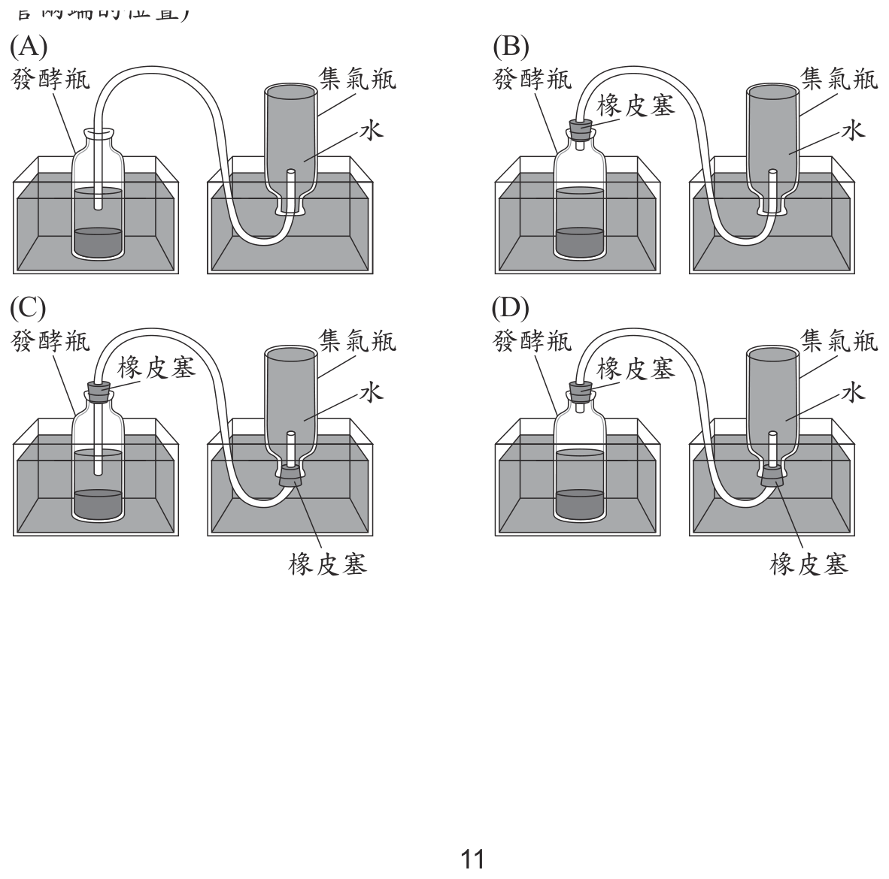
本題選項為上圖中的 A／B／C／D，請對照圖片作答。
答案：（B）
詳解與考點 正解：發酵產生的氣體要以排水集氣法收集，裝置須同時符合氣密與導管能把集氣瓶內水排出的條件。發酵瓶口應有橡皮塞密封，橡皮管一端穿過橡皮塞連到發酵瓶，另一端伸入倒置且裝滿水的集氣瓶口；氣體進入後由下往上排開水。符合此配置的B為正解。
A：發酵瓶沒有橡皮塞，氣體會由瓶口逸散，無法有效導入集氣瓶，錯誤。
C：集氣瓶口多加橡皮塞會堵住排水通路，氣體無法順利排開水，錯誤。
D：集氣瓶口多加橡皮塞同樣會妨礙水被氣體排出，無法完成排水集氣。它看起來對，是因為橡皮塞可增加密封性，但集氣瓶必須保留排水的通路，錯誤。
本題考點：排水集氣法——產氣容器須密封，才能使氣體沿導管流出；導管末端伸入倒置、裝滿水的集氣瓶，氣體才能排水而集氣；集氣瓶口不可被橡皮塞堵住。
第 43 題
牧牧和小歡兩人針對步驟 4，各自提出檢測方法：牧牧：如圖(二十三)所示，在集氣瓶中加入適量的澄清石灰水溶液，搖晃後，若變混濁，表示有二氧化碳，以推測收集氣體的過程，發酵還在進行。小歡：如圖(二十四)所示，將有火焰的線香放入集氣瓶內，若線香持續燃燒，表示有助燃性氣體，以推測收集氣體的過程，發酵還在進行。依據實驗內容，判斷兩人的檢測說明是否合理？
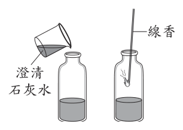
（A） 兩人皆合理（B） 兩人皆不合理（C） 只有牧牧合理（D） 只有小歡合理答案：（C）
詳解與考點 正解：沼氣的主成分為甲烷與二氧化碳。牧牧以澄清石灰水檢驗CO2，若變混濁表示有二氧化碳，可推知發酵仍在進行，合理；小歡說線香持續燃燒可檢出助燃性氣體，但甲烷是可燃性氣體而非助燃性氣體，二氧化碳還會使火焰熄滅，因此只有牧牧合理，故C為正解。
A：小歡的檢測不合理，不能判兩人皆合理，錯誤。
B：牧牧用澄清石灰水檢驗二氧化碳的說明合理，不能判兩人皆不合理，錯誤。
D：牧牧合理、小歡不合理，和本項「只有小歡合理」相反，錯誤。
本題考點：二氧化碳檢測——澄清石灰水遇CO2會變混濁；氣體性質——甲烷是可燃性氣體，氧氣等才是助燃性氣體，必須區分可燃與助燃。
第 44 題
依據實驗內容與結果，可以判斷出下列何者？
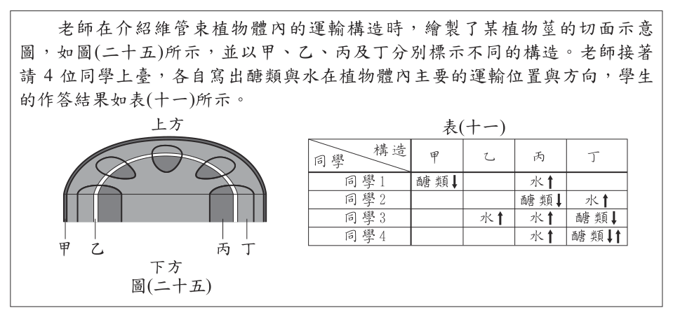
（A） 厭氧發酵溫度越高，微生物的活性反而會降低（B） 此厭氧發酵所產生的氣體，都屬於易溶於水的氣體（C） 三種溫度所產生的沼氣，甲烷的體積百分比都在 20% 左右（D） 表中排開水量數值越大，可表示當天該條件下的發酵速率越快答案：（D）
詳解與考點 正解：本題以排開的水量收集發酵產生的氣體；在相同觀察時間內，排開水量越大表示產氣體積越大，因此可表示當天該條件下的發酵速率越快，D為正解。
A：溫度升高是否使微生物活性降低，須依實驗結果判斷，不能僅由溫度高低直接推出，錯誤。
B：沼氣中的甲烷難溶於水，不能說所產生的氣體都易溶於水，錯誤。
C：甲烷的體積百分比約為50～70%，不是20%左右，錯誤。它看起來對，是因為選項提到三種溫度，容易誤以為比例固定，但數值20%不符甲烷在沼氣中的常見比例。
本題考點：實驗數據判讀——排水集氣中排開水量可代表收集到的氣體體積；在相同時間內，氣體體積越大表示產氣速率越快；不能將未由數據支持的溫度效果直接當作結論。
第 45 題
根據圖(二十五)，推論此植物屬於下列何者？
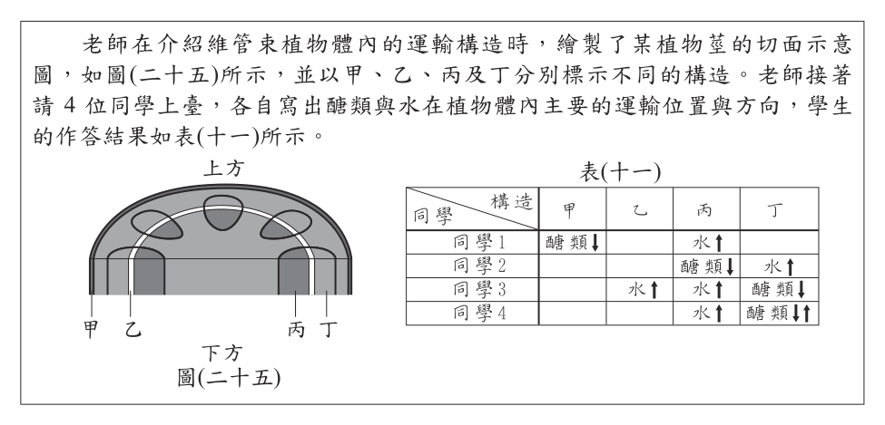
（A） 藻類（B） 蘚苔植物（C） 單子葉植物（D） 雙子葉植物答案：（D）
詳解與考點 正解：題圖的莖橫切面中，甲、乙、丙、丁等維管束沿莖外圍呈環狀排列，這是雙子葉植物莖的典型特徵。雙子葉植物的維管束環狀排列，通常具有形成層，且常見網狀葉脈、軸根系、花瓣數為4或5的倍數，故D為正解。
A：藻類沒有根、莖、葉的分化，也沒有圖示的維管束構造，錯誤。
B：蘚苔植物沒有維管束，不會出現圖中的維管束排列，錯誤。
C：單子葉植物莖的維管束為散生分布，不是環狀排列。它看起來對，是因為兩者都是維管束植物，但須以維管束排列方式區分，錯誤。
本題考點：植物分類——雙子葉植物莖的維管束環狀排列，單子葉植物莖的維管束散生；藻類與蘚苔植物不具有維管束；判讀莖橫切面時先看維管束是否存在及其排列。
老師在介紹維管束植物體內的運輸構造時，繪製了某植物莖的切面示意圖，如圖(二十五)所示，並以甲、乙、丙及丁分別標示不同的構造。老師接著請4位同學上臺，各自寫出醣類與水在植物體內主要的運輸位置與方向，學生的作答結果如表(十一)所示。
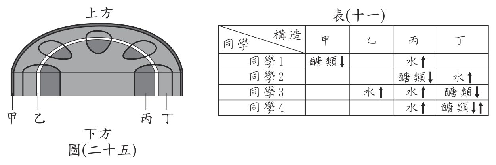
第 46 題
根據本文，推論哪一位同學的作答結果正確？
（A） 同學 1（B） 同學 2（C） 同學 3（D） 同學 4答案：（D）
詳解與考點 正解：題眼是表(十一)必須同時填對「哪個構造」與「運送什麼物質、往哪個方向」。對照圖(二十五)，甲是莖最外層的表皮，乙是左半側維管束中間的白色形成層，丙是右半側維管束靠內的深色木質部，丁是丙外側顏色較淺的韌皮部。水由根往上運送走木質部，所以丙該填「水↑」；醣類由韌皮部運送，且會依需要往上或往下雙向運輸，所以丁該填「醣類↓↑」。表中只有同學 4 兩格都填對，故 D 為正解。
A：同學 1 把「醣類↓」填在甲，甲是表皮，功能是保護與減少水分散失，根本不是運輸組織；而且他漏填韌皮部所在的丁，錯誤。
B：同學 2 把「醣類↓」填在丙、「水↑」填在丁，位置正好對調——丙是木質部應運水、丁是韌皮部應運醣類，兩格互換即整列皆錯，錯誤。
C：同學 3 在乙填「水↑」，乙是形成層，功能是細胞分裂使莖加粗，不負責長距離運輸；他又把丁的醣類只寫成向下，忽略韌皮部可雙向運輸，錯誤。
本題考點：莖橫切面的構造判讀——由外而內依序是表皮、皮層、韌皮部、形成層、木質部，維管束中韌皮部在外、木質部在內，形成層夾在兩者之間。運輸方向判準——木質部運水與礦物質且只向上（蒸散作用拉動），韌皮部運醣類且可上可下（由製造處運往需要處），作答時先定位構造、再核對物質與箭頭方向。
第 47 題
下列哪一個組裝方式符合圖(二十七)中的電路圖？
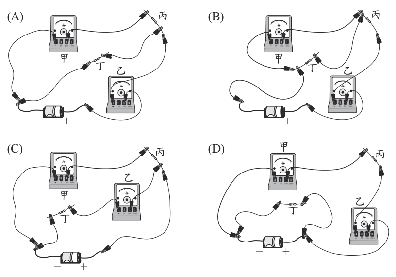
本題選項為上圖中的 A／B／C／D，請對照圖片作答。
答案：（A）
詳解與考點 正解：題圖電路要求各電流計接在欲量測電流的路徑上，且各元件與導線須依電路圖連成正確迴路。A中甲、乙兩電流計及丙、丁均依圖示接於相應路徑，導線連接與電池正負極方向相符，故A為正解。
B：接點或元件位置與電路圖不符，造成端點接錯、迴路分岔或串接順序錯誤，錯誤。
C：接點或元件位置與電路圖不符，不能量得圖示所要求的電流，錯誤。
D：接點或元件位置與電路圖不符，未形成與原圖相同的電路。它看起來對，是因為元件數量相同，但電路判讀要比對每個端點的連接關係，錯誤。
本題考點：電路圖轉換——電流計須串聯在欲量測的路徑上；電路是否相同取決於元件端點的連接關係，不只看元件數量或排列外觀；依電池、導線與各元件逐段追蹤迴路可檢查接法。
第 48 題
表(十二)為小玉報告中所記錄的電流值，若根據圖(二十七) 來判斷表中 I 甲＞I 乙是否合理，下列的判斷與論述何者最適當？
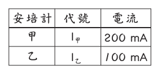
（A） 合理，因為負極為電子流流出端，而甲較靠近電池負極，所以 I甲＞I乙合理（B） 合理，因為甲測得的電流值應為流過丙與丁的電流值相加，所以 I甲＞I乙合理（C） 不合理，因為正極為電流流出端，而乙較靠近電池正極，所以 I乙＞I甲才合理（D） 不合理，因為乙測得的電流值應為流過丙與丁的電流值相加，所以 I乙＞I甲才合理答案：（D）
詳解與考點 正解：圖(二十七)中丙、丁為兩條並聯分支，乙位於兩分支會合後的幹線；並聯電路的幹線電流等於各分支電流相加。I乙＝I丙＋I丁，而甲只量測其中一條分支，所以I乙應大於I甲。表中I甲＝200mA、I乙＝100mA的I甲＞I乙不合理，D的論述正確，故D為正解。
A：把不合理的記錄判為合理，且電流大小不因靠近電池負極而變大，錯誤。
B：甲只量測單一分支，不能把丙、丁兩分支的電流相加後歸給甲，錯誤。
C：雖判為不合理，但以乙靠近電池正極作理由錯誤；電流大小由電路接法決定，不由距離正負極遠近決定。它看起來對，是因為結論相同，但科學論述必須同時有正確理由，錯誤。
本題考點：並聯電路——幹線電流等於各分支電流相加，即I幹＝I分支1＋I分支2；只量單一分支的電流小於兩分支會合後的幹線電流；電流大小不以元件距離電池正、負極的遠近判定。
阿明和小豪正在試玩一套自行設計的月相卡牌遊戲，其規則與流程說明如下所示：
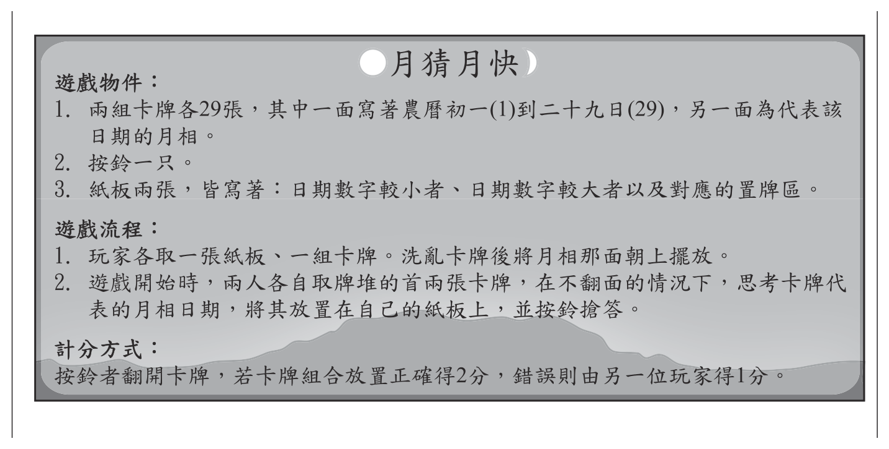
兩人在某次取牌後，阿明先放置好卡牌並按鈴，小豪聽到鈴聲數秒後，才將卡牌放置完成，兩人的卡牌組合如圖（二十八）所示。
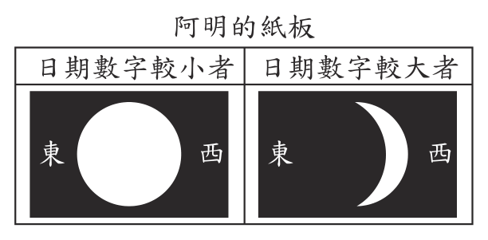
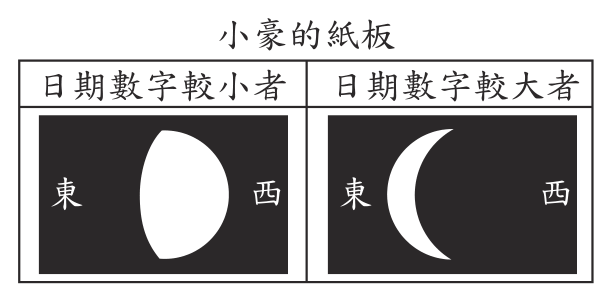
第 49 題
關於此回合阿明和小豪的得分與卡牌放置組合，下列敘述何者正確？
（A） 阿明得 2 分，且小豪的卡牌組合是錯誤的（B） 阿明得 2 分，但小豪的卡牌組合也是正確的（C） 小豪得 1 分，且小豪放置卡牌組合也是正確的（D） 小豪得 1 分，但小豪放置卡牌組合錯誤，會得分是因為阿明答錯答案：（C）
詳解與考點 正解：依計分方式「按鈴者翻開卡牌，若卡牌組合放置正確得 2 分，錯誤則由另一位玩家得 1 分」，須先判按鈴者阿明放得對不對。阿明「日期數字較小者」放滿月（約農曆十五）、「日期數字較大者」放亮面朝西的蛾眉月（約初三、初四），大小顛倒故為錯誤，由小豪得 1 分；再看小豪，其「較小者」為亮面朝西的盈凸月（約初八至十二）、「較大者」為亮面朝東的殘月（約廿六），日期由小到大排列正確。小豪得 1 分且組合也正確，選 C。
A：阿明的卡牌大小顛倒並未放對，不可能得 2 分；小豪的組合也不是錯誤的。
B：同上，阿明放置錯誤即不得分，2 分的前提不成立。
D：小豪確實得 1 分，但其卡牌組合是正確的。它看起來對，是因為小豪的得分來源確實是阿明答錯，容易就此停手而漏掉「小豪自己放得對不對」這一步。
本題考點：月相與農曆日期的對應——面向南方時東在左、西在右；亮面朝西為漸盈（初三蛾眉月、初七八上弦、初十餘盈凸月），亮面朝東為漸虧（廿二三下弦、廿六殘月），滿月在十五。先由亮面方向與盈虧程度定日期，再依計分規則分兩步各自驗證按鈴者與另一位玩家。
第 50 題
根據本文，關於此回合兩人玩遊戲時的神經傳遞敘述，下列何者正確？
（A） 兩人從接受刺激至產生反應的時間相同（B） 眼睛內的肌肉接收刺激（C） 刺激經由感覺神經元傳遞至腦幹並發出命令（D） 命令經由運動神經元傳遞至手指以按鈴搶答答案：（D）
詳解與考點 正解：看到卡牌後思考月相日期再按鈴搶答，屬於需要判斷的自主反應，傳遞路徑為：眼睛視網膜的感光受器接受光刺激→感覺神經元→大腦判斷並發出命令→運動神經元→手指肌肉（動器）按鈴。D 所述「命令經由運動神經元傳遞至手指以按鈴搶答」正是這條路徑的最後一段，故選 D。
A：題文寫阿明先放置好卡牌並按鈴、小豪聽到鈴聲數秒後才完成，可見兩人從接受刺激到產生反應的時間並不相同。
B：接受光刺激的是視網膜上的感光受器，眼睛內的肌肉（如睫狀肌、虹膜）負責調節焦距與進光量，並非接收此刺激的受器。
C：本題須辨識月相、比較日期大小後才動作，屬大腦主導的自主行為，命令由大腦發出；腦幹主管心跳呼吸等生命中樞與部分反射，非此處的判斷中樞。
本題考點：神經傳導路徑與中樞分工——受器→感覺神經元→中樞→運動神經元→動器；需經思考判斷者由大腦下令（自主反應），不經思考的立即動作才走脊髓或腦幹（反射）。判斷「哪個中樞」的關鍵在該行為是否需要判斷。
其他年度
回到國中教育會考自然的年度總覽 ，
或到國中教育會考題庫首頁 看其他科目。
題目與標準答案出自心測中心 會考歷屆試題（依著作權法 §9，考試試題不受著作權保護）。依中華民國《著作權法》第 9 條第 1 項第 5 款，
依法令舉行之各類考試試題不得為著作權之標的，得自由利用。詳解為 AI 整理的學習輔助，
並非官方標準答案 ；中華民國會修訂，引用前請對照現行版本查證。